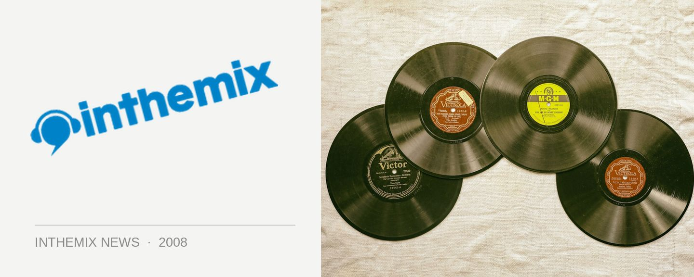

Sounds on Sunday gears up for massive long weekend bash
A-Skillz, Stupid Fresh, Bag Raiders and Kid Kenobi all on the same bill? Yep that’s right and we’re talking about Sydney institution Sounds on Sunday, which can always be relied upon to bring it by the bucketload on a long weekend. And this June long weekend, it’ll all be happening at The Greenwood.
A-Skillz is known as a one-time sidekick to the don of breaks Martin Reeves AKA Krafty Kuts, who together produced the massive Trikka Technology album and the single of the same name, which grew to become one of the biggest breaks anthems of all time. But he’s just as popular when doing his own thing: known for playing on the funkier and bouncier side of the breaks spectrum, he delivers a crowd-rocking party set like no other.
The other international on the bill will be the UK’s Stupid Fresh, slightly newer to the scene but still getting plenty of people moving with their hit single Get The F**k Up and their production work with the likes of Micky Slim and The Aston Shuffle. They’ll be joined by local headliners Kid Kenobi and the Bag Raiders, neither of whom need any introduction.
Sounds on Sunday presents The June Long Weekend Bash! Kicking off on June 8th from 2pm-11pm, tickets on sale on ITM.